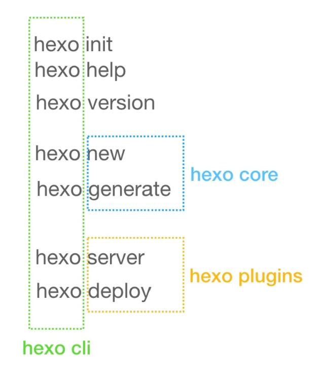

前部分算是转载了文章。
在官方文档中，我们可以找到他的定义：Hexo 是一个快速、简洁且高效的博客框架。
Hexo 使用 Markdown解析文章，在几秒内，即可利用靓丽的主题生成静态网页。
工作原理
文件架构：
1 | ├── node_modules： #依赖包-安装插件及所需nodejs模块。 |
首先本地文件夹的source就是数据库，以.md（markdown）格式存储文章，theme文件夹是主题文件（决定页面模板）。
我们可以通过部署流程来逐步详尽分析。以下先来了解hexo有哪些部署命令，再分析部署的步骤流程。
hexo命令总览：
hexo可以粗略分为三个子项目，分别是:
1 | hexo-cli |
hexo plugins泛指所有的hexo plugin项目。

每次部署的流程：
我发现这个人的解读还是跟我想要解决的问题有偏差，我不是想知道js，node如何工作，如何填充模板。我现在想知道部署过程中我在本地的渲染效果为何在远端没有展现出来，到底是哪里出现了问题。
思考一下，静态文件的渲染依赖于html，我的gh-pages分支上的静态文件一直是没有背景文件的，为何？
我的背景是如何加进去的，是依靠自定义styl文件，在站点文件夹的source/_data文件夹里，那么，我部属过去之后的分支上，有 _data吗？没有。 为何，因为gh-pages上只有css、js之类的文件夹，没有source的，那怎么样才能让远端的自定义文件也生效呢。
到底咋搞呢...我找找原因。
我找到了，只需要，将根目录下的config里也加上你在next文件夹里的自定义文件的配置信息：
1 | custom_file_path: |
我的githubio终于有背景了，哭泣。